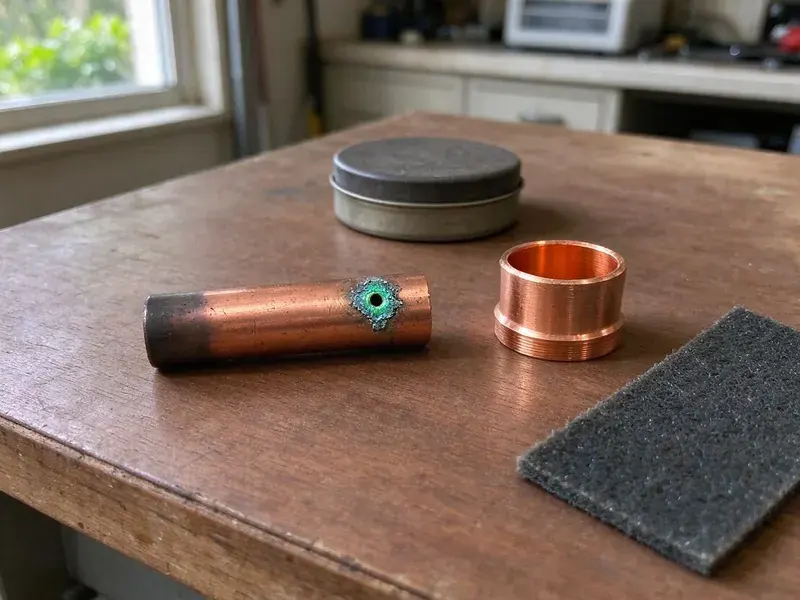

Underground Pipe Repair in Olathe, KS
Water mains, sewer laterals, pool lines and irrigation supply. KRV Plumbing repairs them all in Olathe, KS.
- Pressure Tested Before Backfill
- 811 Called Before Every Dig
- Small, Precise Excavations
- Water, Sewer & Yard Lines

Need Underground Pipe Repair This Week in Olathe, KS?
We locate the leak to within a few feet so the yard is not trenched end to end.
Locating and Fixing Buried Leaks in Olathe, KS
KRV Plumbing starts every buried leak call at the meter. Is the dial moving? If it turns with every fixture off, the leak is on your side, and we confirm it with a pressure drop test before setting up the acoustic listening equipment along the pipe route. Older Olathe homes often have galvanized or polybutylene lines, and that shapes how we approach the repair.
Work we handle every week:
- Small-pit repairs with pressure testing
- Code-compliant direct-bury pipe and fittings
- Sewer lateral and service line replacement

Additional Plumbing Repair Services in Olathe, KS
We offer expert plumbing repair services across Olathe, KS to stop leaks, clear blockages, and keep every fixture working the way it should.


Customers
Why Choose KRV Plumbing for Underground Pipe Repair in Olathe, KS?
Underground leaks hide well. Guessing means extra holes. We locate first with acoustic and electronic gear, so the repair stays inside one small pit rather than a long trench. Less digging, less restoration.
- Written Quotes, Footage, method and price are written up first.
- Pressure Tested, Every repaired line is pressure tested before we backfill.
- Right Materials, PEX or Type K copper for water, PVC for drain and sewer lines.
Citywide Coverage
We repair underground pipe in every part of Olathe, from older blocks with galvanized services to newer subdivisions with PEX and PVC. We stock fittings for both. That means most jobs can start the same day we locate the leak, without waiting on a supply house run for a transition coupling.
Experienced Team
The person who locates your leak is a plumber, not a salesperson. That matters here. When they say a spot repair will hold, you are hearing from someone who fixes pipe for a living.
Safety-First Approach
We call 811 before every dig and wait for the marks. There are no exceptions. Gas, electric and fiber lines often run close to water services, so the crew hand digs within the marked tolerance zone instead of trusting the machine.
Trusted Certified Olathe Plumbing Services Professionals
At KRV Plumbing, we are proud to offer certified plumbing services throughout Olathe, KS. Credentials matter in this trade. Our plumbers hold recognized industry credentials, and they follow strict safety and quality rules on every repair, installation and maintenance call we run.
Call Us Now PHCC Plumbing Contractor Recognition
PHCC Plumbing Contractor Recognition Better Business Bureau (BBB) Accreditation
Better Business Bureau (BBB) Accreditation Angi Certified Pro
Angi Certified Pro ISO 9001 Quality Management Certification
ISO 9001 Quality Management CertificationUnderground Pipe Repair Options for Olathe, KS Properties
Main Water Line Repair in Olathe
Your main water line runs from the meter box to the house under constant pressure. Leaks never fix themselves. A spinning meter dial with every fixture off, falling pressure or a wet spot that never dries tell us to locate, dig and splice the line with code-approved fittings. Old galvanized usually gets replaced.

Water Main Underground Repair in Olathe
Your water main is the pipe between the meter and the house. You own that part. When it breaks, we locate the leak without digging, expose the pipe and cut out the bad section and join in new pipe with buried-rated fittings. Old galvanized usually needs full replacement.
Pool and Outbuilding Supply Line Repair in Olathe, KS
Pool auto-fills, guest houses, outdoor kitchens and detached garages often have their own buried water lines. These runs are long. We use tracer wire, electronic locators and acoustic gear to find leaks along the full length, and repairs are made with direct-bury rated pipe and fittings, then pressure tested before we close up. Rerouting can be cheaper.
Underground Sewer Line Repair in Olathe
Buried sewer damage shows up as odor, slow drains or a soggy patch over the line. Video shows the break. We run a camera with a sonde through the lateral, mark the break on the surface and choose between a spot repair, lining or replacement based on the video. Trenchless methods often save Olathe driveways. Not every line does.
Underground Water Line Repair in Olathe, KS
A leaking water service runs at full street pressure around the clock. The meter never stops. Low pressure, a wet spot that never dries and a meter that turns with everything off are the usual clues, so we verify it with a pressure test and then pinpoint it acoustically. We splice in new pipe to code.
HOA and Multifamily Underground Repair in Olathe
HOA common areas and apartment complexes have long buried runs under parking and sidewalks. Access matters. We locate carefully to avoid unnecessary concrete cutting, schedule work around residents, providing photos and pressure test records for managers and owners. We work with your schedule.
Pipe Bursting Services in Olathe, KS
Pipe bursting pulls a new pipe through the old one while breaking the old pipe outward. The new line takes its place. A bursting head on a cable splits clay, cast iron or brittle plastic, and fused HDPE follows right behind it, often at the same size or one size larger than the original. Collapsed sections are fine. Lining cannot do that.

Polybutylene Pipe Replacement in Olathe
Polybutylene was used in a lot of homes built in the 1980s and early 1990s. It splits suddenly. The gray plastic turns brittle as chlorine in the water attacks it, with failures most common at fittings and tight bends. Replacement is the only lasting fix. We use PEX or copper.
Underground Pipe Repair Near Me in Olathe, KS
Searching for underground pipe repair near me in Olathe, KS usually means the water bill already jumped. The meter keeps running. Our crews arrive with locating gear and repair materials on the truck, which means the first trip usually ends with a mark on the ground and a price.
A buried leak in Olathe gets worse every hour. Delay costs more. We book locating visits across the Olathe area, give you a written price before we dig and pressure test the repair before we backfill.
KRV Plumbing at a Glance
- Fully licensed plumbing team covering Olathe, KS
- 24/7 emergency service with same-day scheduling
- Clear written estimates, no hidden fees
- 4.9-star rated by 910+ Kansas customers
Olathe Map
Olathe Information
- Population
- 147,461
- Area codes
- 913/785/620
- Service area
- Olathe and communities within 40 miles
- Nearby
- Lenexa, Overland Park, Gardner, Shawnee
Buried pipe in Olathe, KS takes stress from shifting ground, and old joints and thin-wall pipe are the first to leak. Basements are common in the eastern part of Kansas, while slab and crawlspace homes are more typical in many other areas.
Expert Services
Call KRV Plumbing for reliable plumbing work done by licensed pros in Olathe, KS.
Our Specialized Plumbing Services in Olathe, KS
At KRV Plumbing, you get every kind of plumbing service from one company across Olathe, KS. From leak detection to full system installs, our team works fast and charges fair prices on homes and commercial properties alike. Take a look at our core services below:


How Our Underground Pipe Repair Process Works in Olathe, KS
We locate before we dig, and we pressure test before we close the hole.
Book the Visit
Call (316) 229-8459 to set a time. Most visits happen same day or next.
Find the Leak
We trace the pipe and listen for the leak before any excavation. You see where it is.
Repair & Restore
We give you the options and price, make the repair, then pressure test it and backfill.
Frequently Asked Questions About Underground Pipe Repair in Olathe
Simple buried pipe repairs usually run $500 to $2,500. Sewer replacements cost more. Extensive trenchless sewer replacements can be $5,000 to $15,000 or more, with location, damage and method driving the total. The price comes after we look.
Most point repairs take a few hours to a day. Full lines run longer. A full service line replacement typically takes one to two days, depending on length, depth and how much of the route can be done with a pull-through method. We give you the timeline first.
It is pipe repair or replacement through small access pits. We do it regularly. Pipe bursting and cured-in-place lining are the two main methods we use for Olathe homeowners, and both leave most of the yard, driveway and landscaping undisturbed compared to an open trench. We check yours first.
Check the meter with every fixture off. Watch the dial. If it moves, water is going somewhere, with soggy ground or a hiss near the meter often pointing to the main line. A locate visit settles it.
Yes, every common material. Old and new. PVC, ABS, cast iron, copper, PEX, clay, galvanized and polybutylene all come up, which means matching couplings and methods to whatever is already in the ground. We stock the usual sizes.
Less digging is the big one. The yard stays mostly intact. Trenchless methods leave driveways, patios and established landscaping alone, which can save more on restoration than the method itself costs compared to an open trench. Jobs usually finish sooner.
We use PEX from major manufacturers like Uponor and Viega. Pipe meets ASTM standards. PVC and ABS products meet the ASTM specs for buried water or drain service, while every fitting we bury is listed for underground use. No off-brand fittings.
Water lines get PEX or Type K copper. Each is approved for direct bury. Sewer lines get Schedule 40 PVC, and the final choice depends on the existing pipe, the soil and what your local code allows. Couplings get sized to both pipes.
Hear From Customers Who Hired Our Plumbing Experts

Diane F.
My kitchen faucet had dripped for months and I finally got tired of hearing it at night. KRV Plumbing came out the next morning, replaced the cartridge and the O rings, and tightened a loose base that was letting water under the sink.
Faucet Repair · Shawnee, KS
Tyler J.
We bought a taller comfort height toilet for my dad, who just had knee surgery. The plumber pulled the old one, found the flange was cracked, and replaced it before setting the new bowl. Took about two hours.
Toilet Installation · Overland Park, KS
James P.
Our restaurant had a slow leak at the hand sink that was rotting the cabinet base. KRV Plumbing came in at six in the morning before prep, replaced the trap and both supply lines, and was packed up before my first cook clocked in.
Commercial Plumbing · Shawnee, KSRobert G.
The camera showed a full break in our clay sewer line near the street. KRV Plumbing replaced it with a trenchless pipe burst, so the only digging was two small pits in the yard. They let us watch the footage before and after.
Sewer Line Replacement · Olathe, KSDaniel K.
A pipe burst in the garage ceiling at 11 at night. Someone answered on the second ring, and the plumber was in my driveway about fifty minutes later. He shut off the main, cut out the split section, and had water back on before 2 am.
Emergency Plumbing · Prairie Village, KS
Mark T.
The floor drain in our office break room backed up every few weeks. The plumber ran a cable, then put a camera down and found roots at a joint about thirty feet out. Seeing it on the screen made the decision easy.
Drain Cleaning · Lenexa, KS